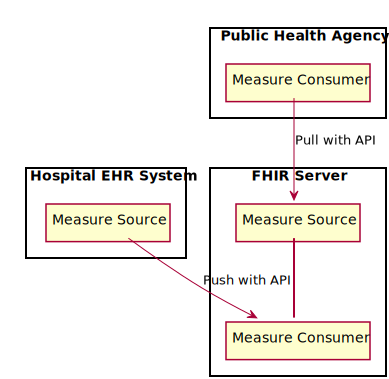
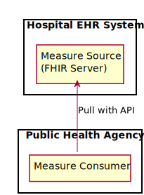
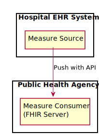
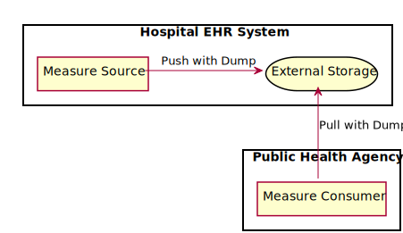
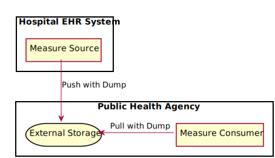
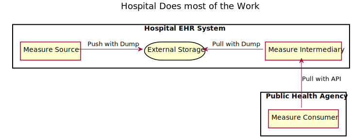
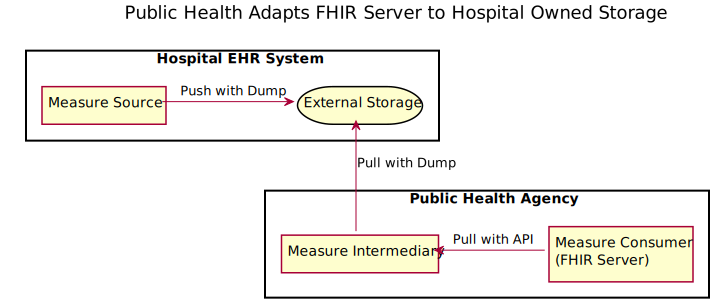
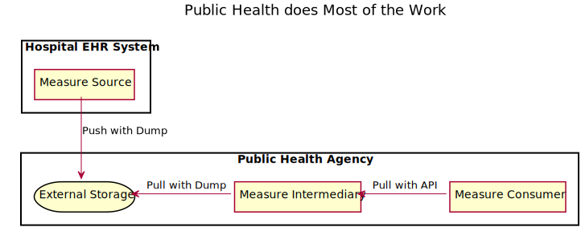

Situational Awareness for Novel Epidemic Response
0.1.0 - CI Build
Situational Awareness for Novel Epidemic Response
0.1.0 - CI Build
Situational Awareness for Novel Epidemic Response - Local Development build (v0.1.0). See the Directory of published versions
The SANER Project envisions a system architecture comprised of small, easily deliverable components that can be used together to support deployment of reporting, analysis, alerting and data aggregation tools to support fast deployment of solutions supporting public health situation awareness.
The major design components described by this guide support the following functions:
These functions are described in more detail in the sections below.
The reporting component is responsible for reporting utilization data known by an authoritative system in the hospital. There may be multiple authoritative systems for different kinds of reporting data. A reporting component will create FHIR Measurement Reports documenting the measures that are known to the authoritative system. These reports will be collected in some form of centralized storage or transmission solution. That solution could be as simple as a file system, or more complex (e.g., using cloud-based storage), and could involve different protocols, including S3, Azure Blob Storage, SFTP, or FHIR RESTful APIs and a FHIR Server.
In this guide, the Reporting component is implemented by the Measure Source actor.
The presentation component selects some subset of available data and presents it to end users providing those users with the ability to interpret and act on the presented information. These components may generate maps showing hot spots based on some aspect of the measured data, charts and annotations of recent trends (e.g., current values plus projections over time), or other visualizations.
In this guide, the Presentation component is implemented by the Measure Consumer actor.
Adapters bridge systems lacking certain capabilities with other systems requiring those capabilities, much like a ground adapter does with two pronged electrical outlet.
In this guide, the Adapter component is implemented by the Measure Intermediary actor.
Several off the shelf FHIR Server components exist which can be stood up in a data center or in the cloud to provide functionality that supports the FHIR Project. HAPI on FHIR is a Java-based FHIR Server that is at the core of the Smile CDR commercial offering. Microsoft offers the Azure API for FHIR. Firely offers Vonk which has both a free community edition and a commercial product. HL7 offers a page filled with Open Source FHIR Server (and client) implementation software.
The figure below shows a FHIR Server acting as an Intermediary between a Hospital and Public Health

However, a Hospital could simply configure it’s own FHIR Server, and Public Health could then pull the data they need from it.

Or, Public Health can configure it’s own FHIR Server, and a Hospital can push the data to it.

Deployments can also use external storage, for example a file system, message queue, S3 bucket, Azure Blob Storage, SFTP, or even Direct Messaging to exchange data. In the figure below, a hospital pushes data to its own external storage, and public health pulls data from it.

But a hospital might as easily push data to public health’s external storage system.

System components are designed such that they can be individually deployed and configured.
The following diagrams depict several different deployments with different responsibilties owned by a Hospital or Public Health Agency



IG © 2020+ HL7 International. Package hl7.fhir.us.saner#0.1.0 based on FHIR 4.0.1. Generated 2020-04-27
Links: Table of Contents |
QA Report
| Version History  |
|
 |
Propose a change
|
Propose a change